There are a variety of different statistical tests. The choice depends on the nature of your predictor and outcome variables. It might seem a bit overwhelming, but the underlying idea is very similar.
| Outcome | ||
|---|---|---|
| Predictor | continuous | categorical |
| continuous | e.g. correlation, linear model/regression | e.g. generalized linear model/logistic regression |
| categorical | e.g. t-test, ANOVA, linear model | e.g. Chi^2-test |
Due to time constraints, we will focus on the tests often used in published papers (printed in bold).
Correlations are used if you have two continuous variables and you want to check whether they have a relationship (regardless of whether one might have caused the other).
Running a correlation analysis, we test whether two variables co-vary,1 i.e. if one is high, the other variable also tends to be high (or, the opposite, low).
The correlation coefficient r can be between -1 (perfect negative correlation) and 1 (perfect positive correlation).
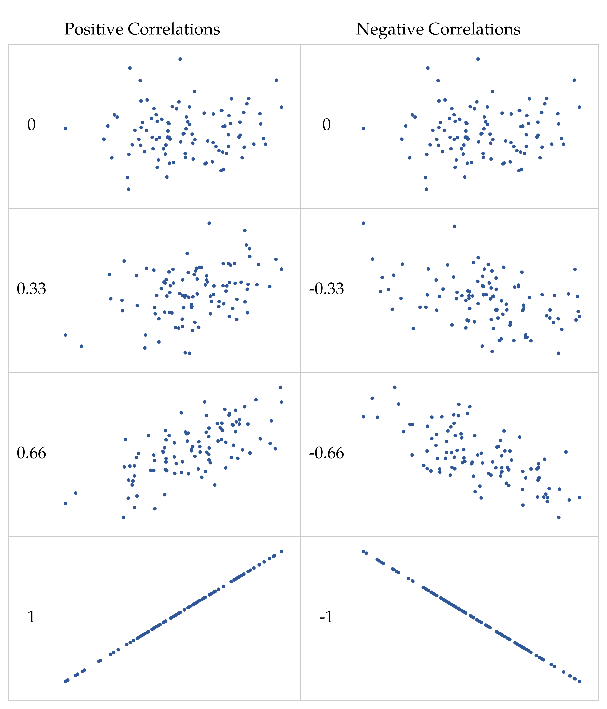
Let’s have a look at how to calculate correlation analyses in Jamovi.
Click on the Analyses tab “Regression” and then “Correlation Matrix”. You can now select two variables by adding them to the right box.
You can also select whether you want to include a visualization of the correlation.
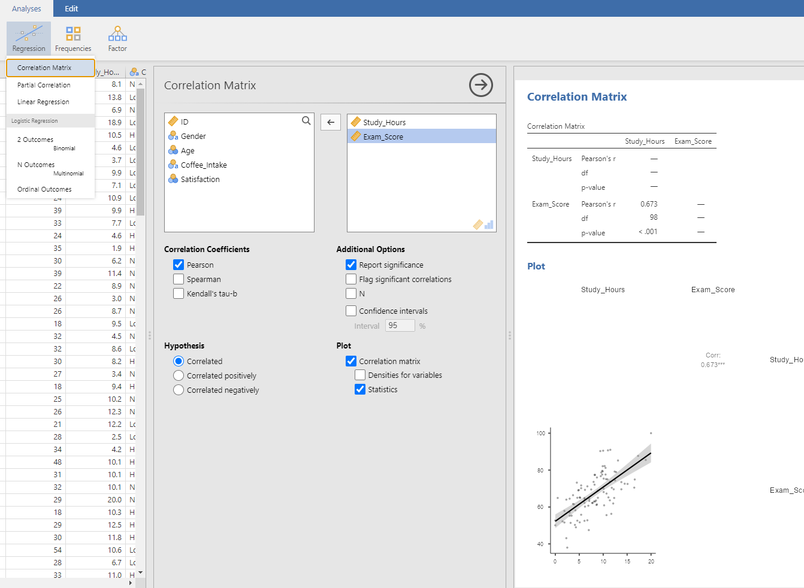Interpreting the r statistic is a bit difficult and it depends on the field and context whether a certain correlation is strong or not. One rule of thumb is the following:
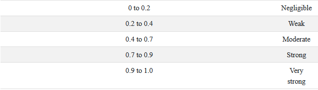So far, we have used the Pearson’s correlation coefficient, which is by far the most used one. However, we can only use this correlation if the relationship between variables is expected to be linear!
Study hours, for example, could also be related to exam score non-linearly: The first hours studied help a lot in increasing your grade, but to get from 99% to 100% might take a lot more work. In such a case (or with ordinal data), we would rather use the Spearman Rank Correlation.
For this analysis, Jamovi doesn’t use the raw data but ranks them in order and uses these ranks. If participant 1 was the person with the most study hours and the best exam score, they would be rank 1 for both variables. Subsequently, the ranks are correlated.
We usually report the correlation coefficient (e.g. r) with the degrees of freedom and the p-value:
r(98) = .673, p < .001
Often, we want to know whether two groups (treatment vs. control, men vs. women…) differ on some measure.
In other words, our outcome variables are continuous (e.g. exam scores) and we’re interested in the effect of a categorical predictor.
In this case, a t-test would be our statistical analysis of choice.
There are different kinds of t-tests, depending on the relationship between the two groups:
If the two groups are unrelated, e.g. men and women, we would run an independent samples t-test.
If the two groups are related, e.g. first and second measurement of the same participants, we would run a paired-samples t-test.
(Sometimes we just want to compare one group to some specific value, then we’d use the one-sample t-test.)
Let’s first look at the common situation where we want to compare two groups. We often have two independent groups if participants are randomly assigned to one of two conditions.
Example Research Question: Do people who drink a lot of coffee score better on an exam than those who drink less coffee?
Hypotheses:
\(H_0\) = High caffeine intake is related to equal or lower exam scores than low caffeine intake.
\(H_A\) = High caffeine intake is related to higher exam scores than low caffeine intake.
If we want to run a t-Test, we first need to define a variable with two levels. Caffeine intake, our grouping variable, has three levels. However, we could argue that “no coffee” could also fall in the “low caffeine intake” group. We thus first have to compute a new variable with only two levels, “low” (including no and low coffee intake) and “high”.
Exercise: Try to compute a new variable, recoding values to “low” if they are non-high.
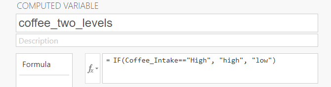
Exercise: Try to figure out how to run an Independent Samples t-Test to test the influence of caffeine intake on exam scores!
Analysis -> T-Tests -> Independent Samples -> exam_scores as Dependent Variable -> new caffeine variable as Grouping Variable.
It is good practice to choose Welch’s test (because it allows for the SDs of the groups to vary), as well as selecting a directed/one-sided hypothesis if possible.
Also, you should test your assumptions, which is really easy in Jamovi.
Finally, it is a good idea to report the descriptives, mean difference with CI, and effect size as well.
A one-sided Welch’s t-Test, testing whether high caffeine intake leads to better exam scores than low caffeine intake, revealed a significant difference (M_diff = 5.42, SE_diff = 2.31) between the two groups (t(78.0) = 2.35; p = .011, Cohen’s d = .485). High caffeine intake leads to higher exam scores (M = 70.7, SD = 11.2) than low caffeine intake (M = 65.3, SD = 11.2). All assumptions of the t-Test were met.
Often, we measure the same participants twice: E.g. once in the treatment manipulation, once in the control condition (and the order would hopefully be counterbalanced) - or before and intervention and after.
If each participant appears in both groups, we have to use the paired-samples t-test.
Example Research Question: Do exam scores decline over time? (This could be due to e.g. a manipulation in between.)
Hypotheses:
\(H_0\) = Exam scores stay the same or improve in a re-test.
\(H_A\) = Exam scores are lower in a re-test than in the first exam.
Obviously, we need to collect data with repeated measures for a paired-samples t-test. Please open the file WorkshopData_Wide in Jamovi.
You can now see that there are three columns for the exam scores: pre, mid, and post.
Exercise: Try to run a paired-samples t-test comparing pre and post exam scores. We expected post scores to be lower.
Analyses -> T-Tests -> Paired Samples T-Test -> add Exam_Pre and Exam_Post to the “Paired Variables” Box.
Also select the assumption checks, the correct directed hypothesis, and mean difference, effect size and descriptives. What do you notice?
The assumption of normality seems to be violated - however, the QQ-plot looks okayish (dots fall on line).
Instead of the Student’s t-test, you could run the non-parametric alternative, which is the Wilcoxon rank test and is independent of the assumption of normality.
This tests whether the median (ranked) difference between paired observations is zero.
Exercise: How would you report the result?
In contrast to what we expected, post exam scores were not lower than pre exam scores but rather higher (M_post = 73.8, SD_post = 11.7; M_pre = 67.1, SD_pre = 11.4). The one-sided paired-samples t-test was not significant (t(99) = -16.1; p = .999; M_diff = -6.66; SE_diff = 0.41, Cohen’s d = -1.61).
Alternatively:
In contrast to what we expected, post exam scores were not lower than pre exam scores but rather higher (Median_post = 73.0; Median_pre = 67.7). The assumption of normality was violated, which is why a Wilcoxon rank test was conducted. This one-sided t-test was not significant (W = 25.0; p = .999; r = -.99).
Often, we either have more than two groups we want to compare and/or more than two predictor/grouping variables.
Let’s assume we want to not only compare “low” to “high” caffeine intake, but do want to account for those who drink no coffee at all. In this case, we thus want to compare three groups.
To do so, we would run a one-way Analysis of Variance (ANOVA), which should be used if we have only one grouping variable with more than two levels.
With ANOVAs, we generally test whether there are differences between the groups, but not directly which groups differ from each other. (Spoiler: To do so, we need to run follow-up (t-)tests.)
In other words, our null hypothesis would be that e.g. caffeine has no effect on scores and all groups score the same:
$ H_0 = mean_a == mean_b == mean_c $
In contrast, the alternative hypothesis would be:
$ H_a = $not all means are equal
Although we want to compare means of the groups to test the hypothesis, the variance is important for this (slightly more complex) statistical test.
There are different relevant variances, between-group and within-group:
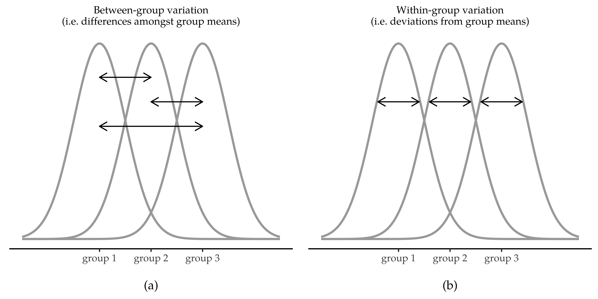To simplify it (a lot), what we’re interested in is whether the amount that the groups differ from each other (between-group variation) is bigger than the variance within the groups.
Exercise: Try to figure out how to run a one-way ANOVA in Jamovi, testing whether the three levels of coffee intake lead to differences in exam scores.
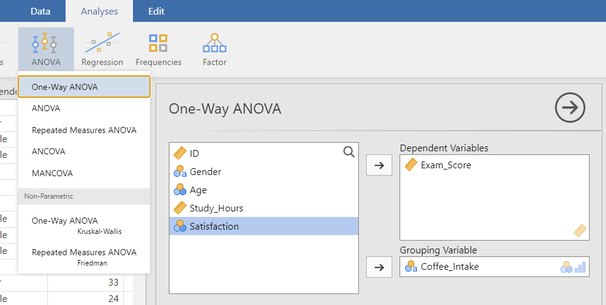
| One-Way ANOVA (Welch’s) |
|---|
| Exam_Score |
The p-value is not significant at 𝛼 = 0.05.
Even if the result would be significant, we would not know yet how exactly the groups differ. For this aim, we could have a look at the descriptive plot and run post-hoc tests. It’s usually a good idea to correct for multiple comparisons.
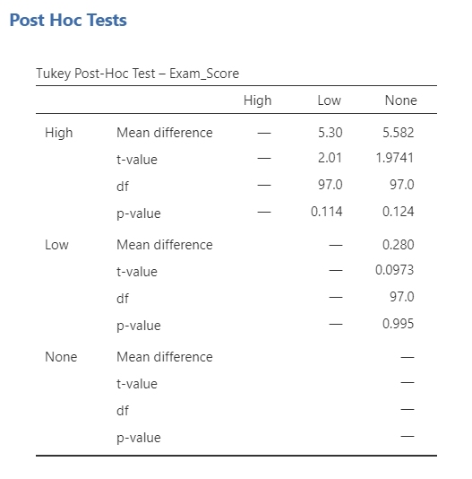
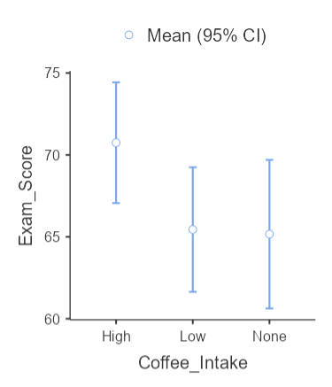
Again, it is a very good idea to test your assumptions to see whether you can actually interpret the results well. It is easy to know which assumptions should be met for the one-way ANOVA if you use Jamovi, because these are listed under Assumption Checks. Simply select them all.
In this case, all assumptions seem to be met: The test of normality is not significant (so no deviations from normality) and in the QQ-plot the dots also fall more or less on the line. In addition, the test of homogeneity of variances is also non-significant (which means no deviations from homogeneity).
Although high caffeine intake leads to slightly higher exam scores than low or no caffeine intake (see table x), a one-way ANOVA indicated that there is no significant difference between the three groups (F(2, 61.3) = 2.72; p = .074). Assumptions of the one-way ANOVA were met.
Similar to the (independent- vs. paired-samples t-test), there are also different ANOVAs for independent and repeated measures. The one-way ANOVA mentioned before can only be used if the data are independent, e.g. from different participants. Often, you do have repeated (within-subjects) measures, e.g. measuring the same participant at several time points or in different conditions.
In Jamovi, we would, again, need the wide data set for this with pre, mid, and post exam scores.
You can then simply select ANOVA –> Repeated Measures ANOVA. Specifying the variables is a bit more tricky, as you have to write down the names of the “factor levels” in the first box, and drag the respective variable to the second column.
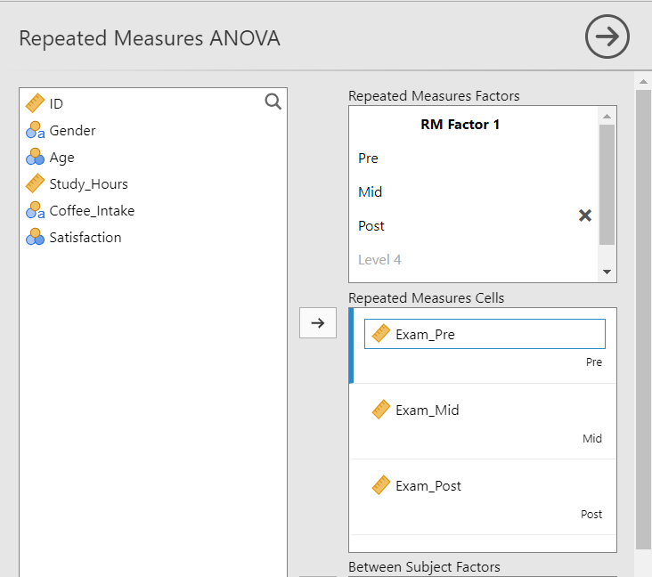
Before we report the ANOVA, we would again check the assumptions: Sphericity tests whether the variances of the differences between the conditions are equal. It should be non-significant, but if it is significant, we could add a sphericity correction to the degrees of freedom.
The results show that there is indeed a difference between the time points in exam scores (F(2, 198) = 121, p < .001). It’s also good practice to report the effect size, partial eta squared.
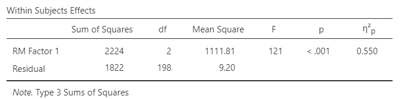
Again, we still don’t know which time points differ from each other, for which we would run post-hoc tests (e.g. Tukey-corrected for multiple comparisons):
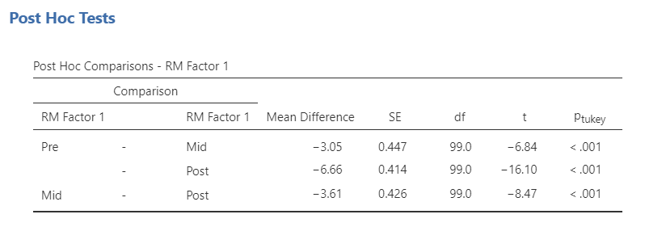
We can see that all time points significantly differ from each other, e.g. pre vs. mid (t(99) = -6.84; p < .001).
Under estimated marginal means you can get a plot of the results:
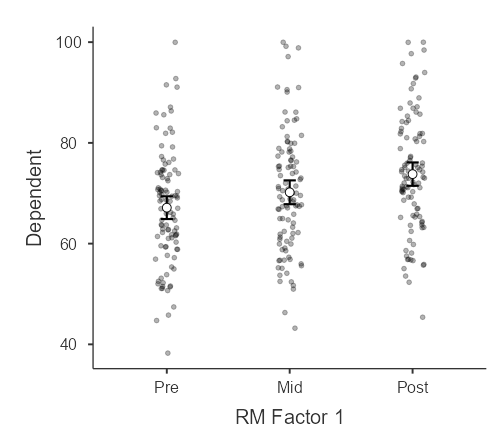
One big advantage of ANOVAs (compared to t-tests) is that you can add several variables in it together to analyze their main effects as well as interactions between variables. For example, you might be interested in whether there are differences in caffeine intake (between-measures!) over time in the exam scores (within-variable!).
To do so in Jamovi, you would simply add “caffeine intake” to the “Between Subject Factor” box.
If you then check out the output, you will see that there is a main effect for between-subjects and the interaction added (which are both non-significant).
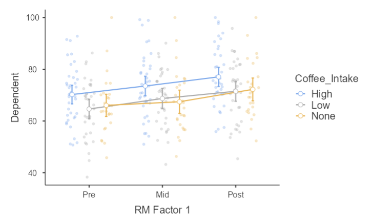
Similary, we might be interested in the effects (and interaction) of two (or more) between-subjects variables on some outcome, such as whether caffeine intake and gender have an effect on exam scores.
E.g.: We could imagine that coffee has a stronger effect for men on exam scores than for women.
To analyze this, we don’t need to run a repeated measures ANOVA, but can rather use a normal or factorial ANOVA. In Jamovi, we specify the dependent or outcome variable and the predictors as fixed factors.
As with previous tests, we can test the assumptions, specify the precise model, run post-hoc tests and get plots (estimated marginal means).
In this example, none of the effects reach significance.
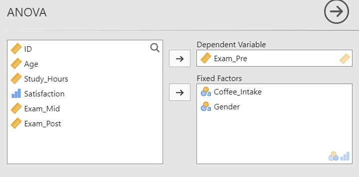
So far, we have mainly looked into using grouping variables (or categorical factors) as predictors. Only in correlation, we had two continuous variables. Sometimes we are interested in the effects (and interactions) of several (between-subjects) continuous and/or categorical variables on a (continuous) predictor. In this case, we can use an analysis that is actually like a swiss army knife: The regression analysis or linear model.
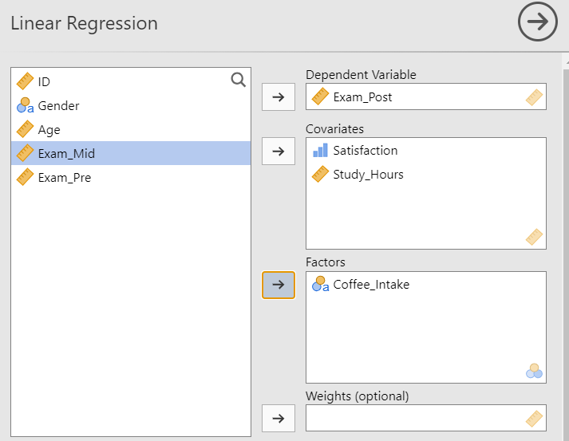
While discussing the details of regression models is beyond the scope of this workshop, just note that the output looks a bit different than what we’re used from the ANOVAs. You get a t-value and a p-value for each effect, including comparisons of groups (one group to a reference level, e.g. “none” coffee intake). You can usually interpret this outcomes, but check out this chapter for details.
We’ve reached the end of this workshop!
Thank you for participating.
You should now have had the opportunity to practice different statistical tests using Jamovi:
t-tests
one-way, repeated measures and factorial ANOVA
regression
testing assumptions